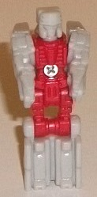
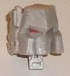
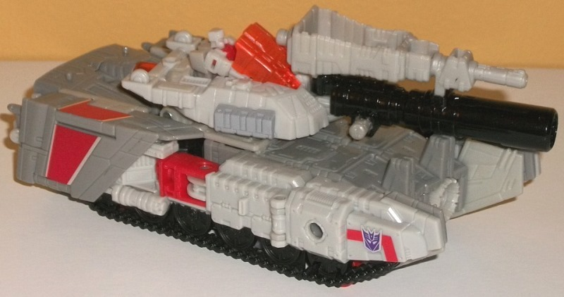
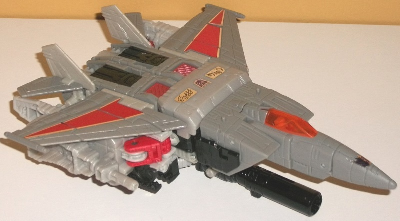
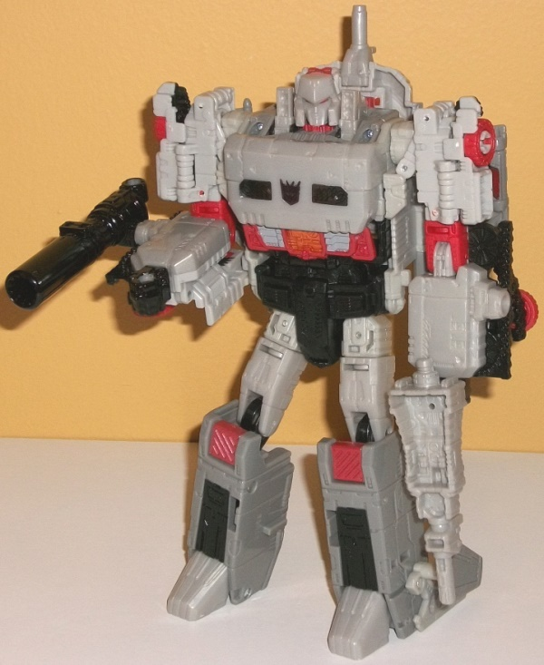

Allegiance
: Decepticon
Size
: Voyager
Difficulty of Transformation to Tank
:
Medium
Difficulty of Transformation to Jet
:
Medium
Color Scheme:
Light milky gray,
moderately light gray, black, and some milky red, moderately pale semi-metallic
red, translucent orange, and dull pumpkin orange
Rating
: 7.5


Doomshot is the name
of Megatron's Titan Master and he looks kind of like a mix of Megatron
and Blitzwing, which this mold was eventually retooled into. The Titan
Master head looks very much like Megatron in terms of the "helmet" with
a fairly large "bucket head" with little ridges on the side (and thankfully
it doesn't have a big tab sticking out of the top like the OTHER Megatron-looking
Titan Master,
Nucleon
). The eyes are a visor,
though, like Blitzwing's. The chest details also look a bit like the ridges
on Blitzwing's chest, along with a simple triangle in the center that is
supposed to resemble G1 Blitzwing's jet cockpit-chest. Otherwise, the details
are very generic, with just general rectangular details on the legs and
blocky hands molded onto the inside of the arm pieces. The coloration in
this mode is VERY dull-- the body is a nice milky red, but the rest is
a completely unpainted, very blah milky gray. Doomshot just looks very
unfinished with this color scheme. As with any Titan Master, in this mode
Doomshot can move back-and-forth at the hips and knees (as one, each leg
is bolted together), as well as limited ball movement at the neck and shoulders.
In head mode, Doomshot works pretty well as a Megatron noggin. Granted,
of course there's some extra junk behind the head that are the legs and
arms of the Titan Master mode, but that fits in with Megatron's general
"bucket head" shape and isn't really even a minor issue. The sculpting
on Megatron's face is quite well-done and crisp, with again those little
divots on the sides of the angular bucket head and a stern look on his
mouth and narrowed eyes. Unfortunately, yet again this suffers from a lack
of paint-- only the eyes are painted. I would've liked some silver paint
on the face, at least, to help make some of the sculpted details on Doomshot/Megatron's
head stand out.



Megatron's first mode
is a tank. Most of the front half of this mode is pretty solid; you've
got some pretty solid tread sections, fairly nice proportions (with only
the robot heels and jet exhaust engine details rather obvious in the center
front-- the tailfins blend in really nicely with the front sides of the
tank), and a turret that-- though it has a pretty small gun-- gets a much
more proportional gun when you plug on Megatron's black fusion cannon piece
onto the front. (There's also a hole on the top of the gun that you can
plug in Megatron's OTHER gun, which is a light milky gray with a fairly
short barrel but a section near the back end for a Titan Master to sit
in.) The only problem with plugging in BOTH guns into the turret is that
logically it makes no sense since the seat for the Titan Master in the
middle of the turret is too low for the Titan Master to actually be able
to see over both guns. The turret can rotate around 360 degrees, with the
robot heels on the front getting in the way of rotation just a tad. The
turret itself does sit a bit low and could stand to be a little higher
(and larger proportionally), but it's still pretty solid overall. The back
end of this mode, though, is definitely pretty weak. It's pretty obvious
the jet mode stuff is all folded up back there, with the wings on the sides
and the back end of the jet cockpit piece making up the back end of this
mode. The treads also don't go back all the way-- they stop right at the
wings, and said wings often don't flip in securely. (They also can pop
off inadvertently during the folding-up process, which is mildly annoying.)
As for the colors, they're that really blah light milky gray, a more medium
gray, black, and a bit of red here and there (with some transparent orange
and some foil red-and-silver stickers on the wings). Having SO MUCH gray
may be G1-accurate, but it sure makes the toy look fairly boring without
a substantial amount of silver paint. The bits of red and translucent orange
here and there contrast against the gray, but they just aren't visible
enough-- especially in this mode-- to make him look visually interesting.
the foil stickers on the wings also look cheap, and can peel a bit easily
given they go right up to the edges of pieces that are REQUIRED to fold
for transformation. Just... use regular paint apps, Hasbro. The black is
used only on the treads and gun, so although they give him a soild dark
color, it's also monochrome just like the gray and just not very exciting.
It's a shame too, because the toy has a TON of great mold details that
are just begging for some paint. There's little armor plates, vents, ridges,
and the like everywhere, and though the treads are merely details (there's
wheels on the underside to make him roll instead in this mode), they're
very intricately detailed as well. It's also worth noting that Megatron
has two little pegs for Titan Masters to stand on in this mode-- both near
the back, on the top of the piece that becomes part of the front of the
jet mode.
Megatron's other alt
mode is a jet, strongly hinting that this is a "pre-mold" for Blitzwing
later on down the line, especially since his and Blitzwing's jet modes
look so similar. Generally this mode is much stronger than the tank, with
a very solid, proportional look from a top-down or somewhat diagonal view--
the noosecone and front section sticks out as much as you think it would,
the wings and the tailfins are nice and fairly proportional, and the main
body is nice, solid, and fairly streamlined. As with many jetformers, the
weakness comes from the bulky undercarriage, with the tread pieces folded
back underneath the wings, but still pretty obvious. The tank turret is
now on the bottom of the mode-- actually a pretty darned ingenious spot
for it, to give Megatron a way to shoot at targets below him. It sticks
out a bit TOO far below the main body of the plane, though, and is a minor
eyesore from a side-on view. On a lesser note, the robot fist details are
pretty obvious on the sides underneath the wings. The gray is broken up
a bit better in this mode, what with the red foil stickers being more apparent,
along with some pale semi-metallic red and black on the main body and a
nice translucent orange cockpit. A Titan Master can indeed fit inside the
cockpit, but not in the way you're thinking where you just lift up the
window-- you actually have to lift up almost the entire nosecone, and there's
a seat section that won't fold back like the rest of the nosecone that
you stick the Titan Master in.
Despite being a "pre-tool"
for Blitzwing, the robot mode has been "Megatron-ized" enough where it
definitely looks like him. The proportions are pretty solid overall, with
two noticeable exceptions-- the chest isn't any wider than the waist, which
is a bit odd especially for Megs, and the lower arms a bit 2-D because
they form part of the side tread sections. They look fine from a frontal
view-- but from a side view, they're definitely too thin. Still, you can
peg in Megatron's fusion cannon onto the side of his right (or left) arm,
as you'd expect from a G1-esque Megatron. There's some kibble behind his
back-- the turret sticks out a little from behind his head, though having
an extra gun behind his head doesn't seem out-of-character for Megatron,
so I don't really mind that part. What I DO mind, though, are the wings
which just hang back between his shoulders and his main body and don't
really go anywhere. You can fold them up a bit, but regardless they definitely
look out-of-place and the fact that part of them can pop off so easily
makes them even a bit more of an issue. The tailfins are fairly obvious
on the sides of the lower legs, but on the plus side they double as heels
to keep Megs nice 'n stable, so that's another extra I don't mind. It's
quite ingenious that the exhaust engine bits rotate around to become the
feet, though. There's two small pop-up bits next to his head that, with
their circular details in the center, hearken back to Super Megatron, a
Japanese upgrade to the character that made him a jet, so... it certainly
fits on this toy. The body details are definitely Megatron's, with some
nice intricate details on the waist and abs, with the former black and
the latter a nice mix of red, dull orange, and gray. His chest is pretty
smooth and rectangular, with some unfortunately chinsy foil stickers that
give him his Decepticon symbol and G1 "swirl" details, but don't fit in
with the surrounding gray at all because of the super-shiny foil nature
of them. The colors as a whole are definitely broken up the best in this
mode, with red and black spread fairly evenly throughout the entire figure.
I still wish there was less of that blah light milky gray, but it is what
it is, I guess. For articulation, Megatron can move at the neck slightly
and at the shoulders (at two points), elbows (at three points), hips (at
three points), knees, and slightly back-and-forth at the ankles. Thus given
that he's pretty well-balanced, he can pull off some pretty good poses.
Titans Return Megatron
was honestly unneeded. Yeah he's a noteworthy character, but this is so
clearly a "pre-mold" for Blitzwing, the color scheme is pretty bland overall,
and what should be the primary alt mode for Megatron-- the tank mode--
is definitely the weakest of his three modes. It's a not a bad mold by
any means, but there's definitely a good number of better Megatron toys
out there that more effectively capture his character without making sacrifices
because the toy was made primarily for another character.
Reviews by Beastbot